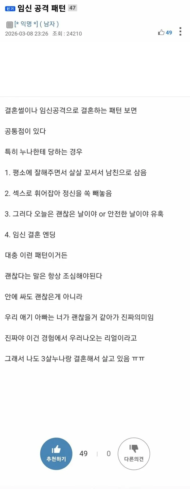

연상 누나들의 임신공격 패턴 ㄷㄷ
댓글
난...이제 누나 만나면 ;;
애 바로 생기면 건강한거니 문제없지
연하나 연상이나 동갑이다 요즘 난임 심각하다ㅠ
퐁퐁 😂 😆 😂 😆
나 27살때 한살연상 누나에게 똑같이 당했다
조심해라
아직 더 놀고 싶었는데
내가 책임감이 큰걸 노리고 계획적으로 고백하며 접근했다
행쇼
나도 25살에 당해ㅆ어 살ㄹ

난...이제 누나 만나면 ;;
애 바로 생기면 건강한거니 문제없지
연하나 연상이나 동갑이다 요즘 난임 심각하다ㅠ
퐁퐁 😂 😆 😂 😆
나 27살때 한살연상 누나에게 똑같이 당했다
조심해라
아직 더 놀고 싶었는데
내가 책임감이 큰걸 노리고 계획적으로 고백하며 접근했다
행쇼
나도 25살에 당해ㅆ어 살ㄹ
와이프가 10살이나 많다고?